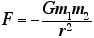
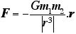
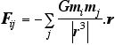
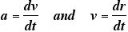
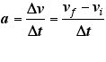
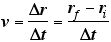
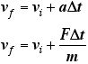
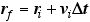

HET602 Project: Solar Systems Dynamics
Swinburne Astronomy Online
Geoff Pack, Student ID: 1606948
The gravitational attraction between two bodies is given by Newton's universal law of gravitation:
|  | or in vector form: |  |
- where F is the force between the bodies, m1 and m2 are their masses, and r is the seperation between them.
For a system of many bodies, the total force on each body is simply the sum of the forces between it and each other body individually:

We can then resolve the forces into components along each axis, and calculate them seperately. In programming code (javascript in this example) this could be written as:
for (var i=0; i<N; i++) {
for (var j=i+1; j<N; j++) {
// calculate dx,dy,dr:
dx = px[i] - px[j];
dy = py[i] - py[j];
dr = Math.sqrt(dx*dx + dy*dy);
// calculate forces - add to previous calculations:
Fx[i] += -G*m[i]*m[j]/(dr*dr*dr) * dx;
Fy[i] += -G*m[i]*m[j]/(dr*dr*dr) * dy;
Fx[j] += -Fx[i];
Fy[j] += -Fy[i];
}
}
Once we have calculated all the total force on a particle, we can use it to calculate its acceleration using Newton's 2nd law (F=ma).
The equations of motion for two bodies attracted by gravity can be solved analytically - this is what Newton did when he derived Kepler's laws from his laws of motion. But in general, it is not possible to solve these eqautions for three of more bodies simultaneously, so numerical methods (and computers) must be used.
We want to find the velocity and position of a body, given its acceleration. We know that acceleration is the rate change of velocity, and velocity is the the rate change of position:
|  | ||
| in discrete form: | ||
|  |  | |
| re-arranging: | ||
 |
 |
|
We can now solve this on a computer:
// calculate acceleration, velocity, position of each planet:
for (var i=0; i<N; i++) {
vx[i] += Fx[i]/m[i]*dt;
vy[i] += Fy[i]/m[i]*dt;
px[i] += vx[i]*dt;
py[i] += vy[i]*dt;
// plot position:
moveDiv(p[i],px[i],py[i]);
}
Here are two simple examples of the above method I wrote in dynamic html and vrml.
The integration method above (known as the Euler, or tangent line method) is simple but not very accurate, and errors can accumulate over time. Accuracy can be improved by taking smaller timesteps, but generally it is better to use integrators such as the Runge-Kutta or predictor-corrector methods. [O'Neil, pp.1067-1074]
That said, I ran the above two programs each overnight (about 9 hours), and after approximately 1.3 million timesteps (of 1 day each ~ 3500 years) and the orbits of the planets had not diverged very much from when first run.
| << back | index | next >> |